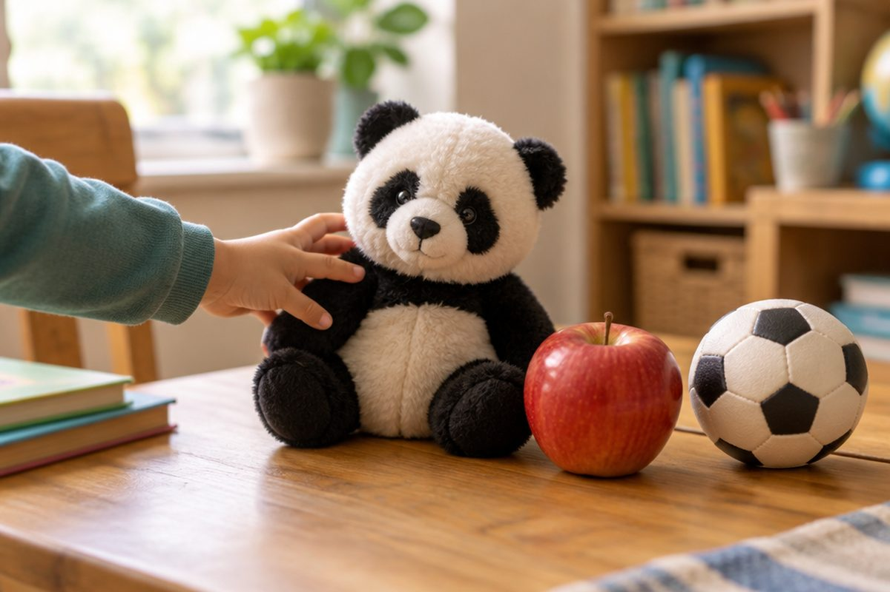

중국어로 '나는 ~을 좋아해!' 말해 볼까요?

판다, 사과, 축구, 노래… 여러분은 무엇을 좋아하나요? 좋아하는 것을 이야기하면 친구와 금방 친해질 수 있어요. 오늘은 중국어로 좋아하는 것을 말하고 물어봐요.
我喜欢(wǒ xǐhuan) + 좋아하는 것
喜欢(xǐhuan, 시환)은 '좋아하다'예요. 我喜欢 뒤에 좋아하는 것을 붙이면 '나는 ~을 좋아해요'가 돼요.
我喜欢熊猫。(wǒ xǐhuan xióngmāo, 워 시환 슝마오)는 '나는 판다를 좋아해요.', 我喜欢苹果。(wǒ xǐhuan píngguǒ, 워 시환 핑궈)는 '나는 사과를 좋아해요.'예요.
우리말은 '판다를 좋아해'처럼 좋아하는 것이 앞에 오지만, 중국어는 '좋아해 → 판다' 순서예요.
我 + 喜欢 + 熊猫 → 我喜欢熊猫。(나는 판다를 좋아해요.)
좋아하는 '활동'도 말할 수 있어요
喜欢 뒤에는 하는 일도 올 수 있어요. 唱歌(chàng gē, 창꺼)는 '노래하다', 看书(kàn shū, 칸 수)는 '책을 읽다', 踢足球(tī zúqiú, 티 쭈치우)는 '축구를 하다'예요.
我喜欢唱歌。는 '나는 노래하는 것을 좋아해요.', 我喜欢看书。는 '나는 책 읽는 것을 좋아해요.'예요.
我喜欢踢足球。(wǒ xǐhuan tī zúqiú) → 나는 축구하는 것을 좋아해요.
묻고 대답하기 — 什么(shénme)와 吗(ma)
'무엇을 좋아해?'는 你喜欢什么？(nǐ xǐhuan shénme, 니 시환 선머)예요. 什么는 '무엇'이에요.
'~을 좋아하니?'는 문장 끝에 吗를 붙여요. 你喜欢狗吗？(nǐ xǐhuan gǒu ma, 니 시환 거우 마)는 '너는 개를 좋아하니?'예요.
좋아하면 喜欢！, 좋아하지 않으면 不喜欢(bù xǐhuan, 뿌 시환)이라고 대답해요. 喜 앞의 不는 원래 소리 bù(뿌)로 읽어요.
A: 你喜欢狗吗？ B: 喜欢！我很喜欢狗。 / 不喜欢，我喜欢猫。
很(hěn)과 也(yě)로 더 풍부하게
아주 좋아할 때는 喜欢 앞에 很(hěn, 헌)을 붙여 很喜欢이라고 해요. 我很喜欢熊猫。는 '나는 판다를 아주 좋아해요.'예요.
친구와 좋아하는 것이 같다면 也(yě, 예)를 써요. 我也喜欢猫。(wǒ yě xǐhuan māo, 워 예 시환 마오)는 '나도 고양이를 좋아해.'예요. 也는 喜欢 앞에 놓아요.
싫어하는 것도 말해 봐요. 我不喜欢牛奶。(wǒ bù xǐhuan niúnǎi)는 '나는 우유를 좋아하지 않아요.'예요.
A: 我喜欢猫。 B: 我也喜欢猫！(나도 고양이 좋아해!)
핵심 낱말
- 喜欢 (xǐhuan)
- 좋아하다
- 什么 (shénme)
- 무엇
- 不喜欢 (bù xǐhuan)
- 좋아하지 않다
- 很 (hěn)
- 아주, 매우
- 也 (yě)
- ~도
꼭 알아야 할 표현
| 我喜欢熊猫。 | 나는 판다를 좋아해요. | wǒ xǐhuan xióngmāo (워 시환 슝마오) |
| 你喜欢什么？ | 너는 무엇을 좋아해? | nǐ xǐhuan shénme (니 시환 선머) |
| 我喜欢苹果。 | 나는 사과를 좋아해요. | wǒ xǐhuan píngguǒ (워 시환 핑궈) |
| 你喜欢狗吗？ | 너는 개를 좋아하니? | nǐ xǐhuan gǒu ma (니 시환 거우 마) |
| 我不喜欢牛奶。 | 나는 우유를 좋아하지 않아요. | wǒ bù xǐhuan niúnǎi (워 뿌 시환 니우나이) |
| 我很喜欢踢足球。 | 나는 축구하는 것을 아주 좋아해요. | wǒ hěn xǐhuan tī zúqiú (워 헌 시환 티 쭈치우) |
| 我喜欢唱歌。 | 나는 노래하는 것을 좋아해요. | wǒ xǐhuan chàng gē (워 시환 창 꺼) |
| 我也喜欢猫。 | 나도 고양이를 좋아해요. | wǒ yě xǐhuan māo (워 예 시환 마오) |
| 看书 | 책을 읽다 | kàn shū (칸 수) |
| 熊猫 | 판다 | xióngmāo (슝마오) |
한 줄 정리
- 我喜欢 + 좋아하는 것: '나는 ~을 좋아해요.' (좋아하다 → 대상 순서)
- 你喜欢什么？(무엇을 좋아해?) / 你喜欢 ~ 吗？(~을 좋아하니?)로 물어요.
- 不喜欢은 '좋아하지 않다', 很喜欢은 '아주 좋아하다', 我也喜欢은 '나도 좋아해'예요.